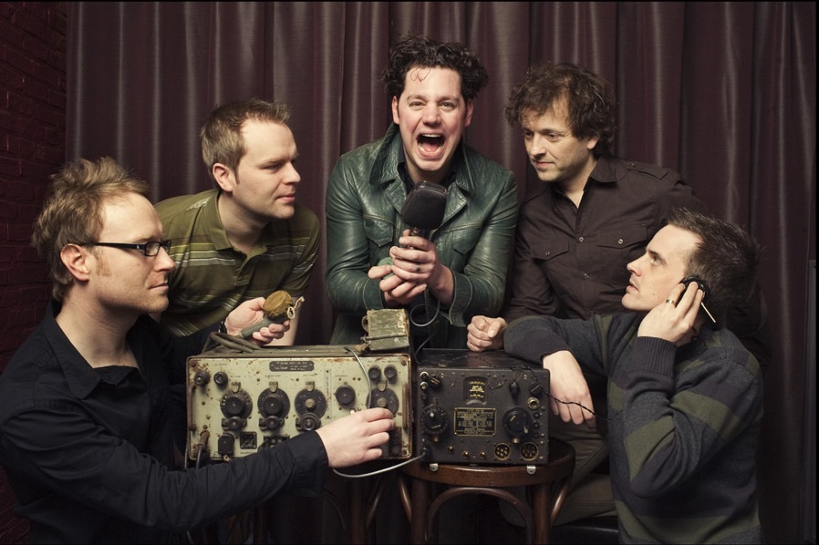
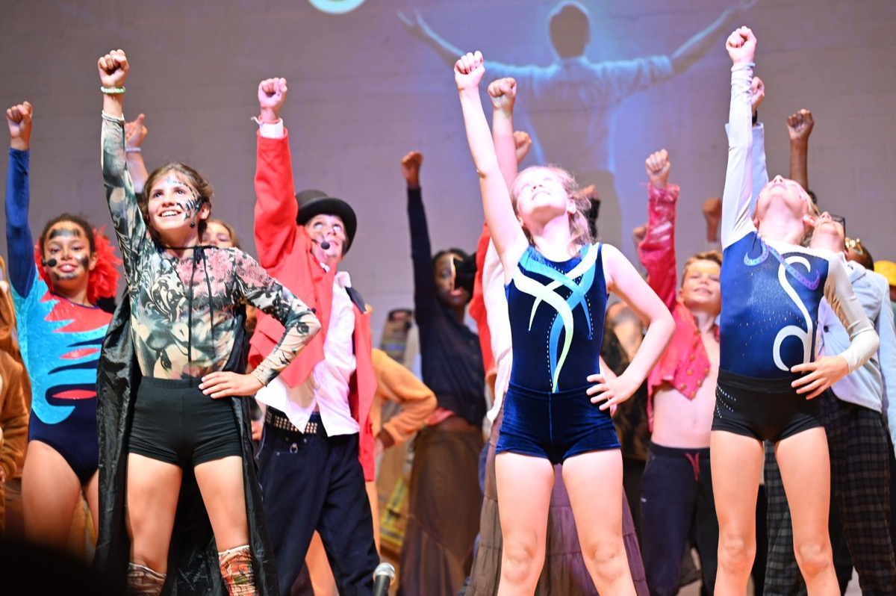
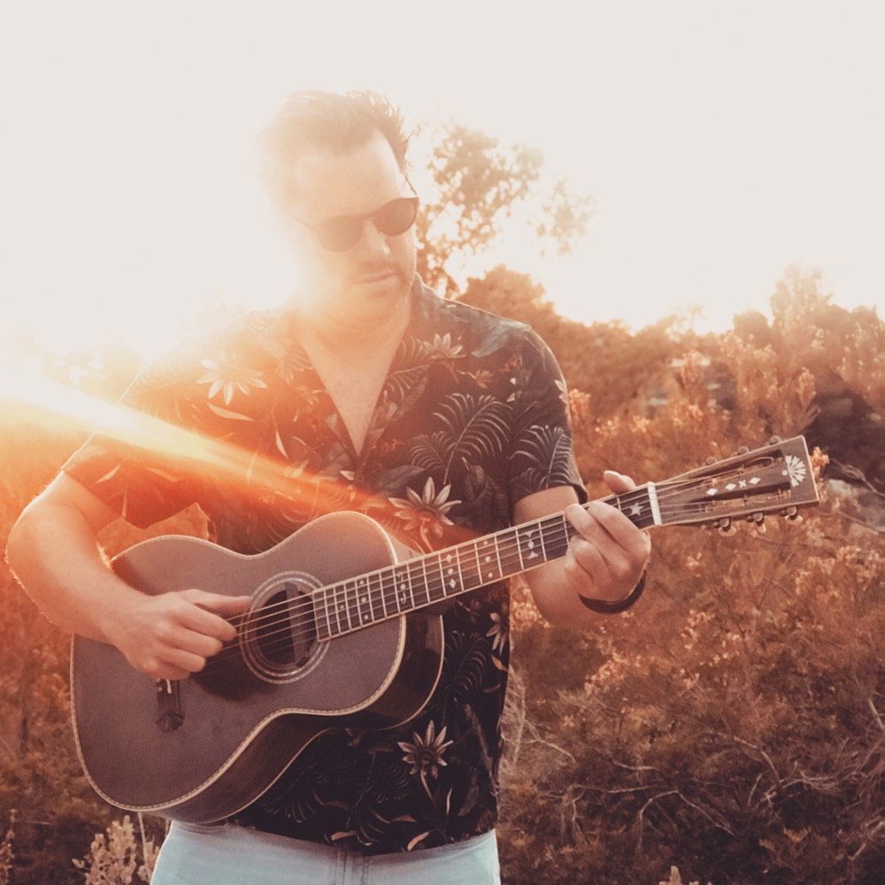

Ik ben David, songwriter en muzikant. Mijn muzikale achtergrond is breed: van bandmuziek en albums tot musicals, songwriting voor andere artiesten en mijn eigen Nederlandstalige songs.

Met Palomine nam ik twee albums op en tourde ik in Groot-Brittannië en Nederland. Verschillende nummers kregen airplay op Vlaamse radiozenders.

Naast mijn eigen muziek werk ik al meer dan 15 jaar als leerkracht Muzische Vorming in het lager onderwijs. Ik begeleid kinderen van 5 tot 12 jaar in muziek en theater en stond mee aan de basis van verschillende grote schoolmusicals, waaronder The Greatest Showman, Alice in Wonderland, The Lion King en Sjakie en de Chocoladefabriek. Samen met mijn vrouw zet ik dit werk verder binnen StudioTomaatGarnaal.
De laatste jaren ligt mijn focus steeds meer op songwriting. Ik schrijf graag samen met andere muzikanten en artiesten en ben geboeid door het hele proces: van een eerste idee tot een song die klopt. Recent schreef ik tijdens een writing session met Jeremie Vrielinck een nummer voor Willy Sommers.

Momenteel werk ik aan mijn eerste soloalbum in het Nederlands. Daarin probeer ik vooral mijn eigen stem als songwriter verder te vinden.
In het kort
- Band
- Palomine: twee albums, tours in Groot-Brittannië en Nederland, airplay op Vlaamse radio
- Songwriting
- Co-write met Jeremie Vrielinck voor Willy Sommers
- Musicals
- The Greatest Showman, Alice in Wonderland, The Lion King, Sjakie en de Chocoladefabriek
- Onderwijs
- 15+ jaar leerkracht Muzische Vorming, kinderen van 5 tot 12
- Studio
- StudioTomaatGarnaal, samen met mijn vrouw
- Nu
- Eerste Nederlandstalige soloalbum